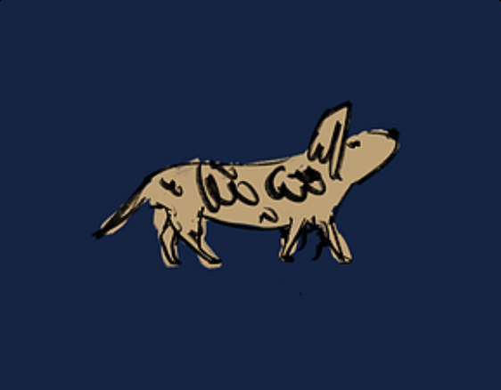

Hand-drawn identity
Use a simple illustrated dog as the central visual anchor rather than a generic game asset language.
CASE 03 / SOLO INTERACTIVE PROJECT / HTML5
A compact independent project spanning concept, visual design, interaction logic, art assets, sound, playtesting, and publishing.

CHALLENGE
The project required visual design and interaction to work together with logic, assets, sound, testing, and publishing. Every design decision had to survive implementation.
PERSONAL CONTRIBUTION
I independently conceived, designed, developed, tested, and published the project in GDevelop, including visual identity, interaction design, event logic, art asset creation and integration, sound implementation, and playtesting.
KEY CREATIVE DECISIONS
The project is intentionally compact, allowing interaction, visual tone, and logic to stay coherent under one design direction.
Use a simple illustrated dog as the central visual anchor rather than a generic game asset language.
Keep the play loop visually legible so navigation and feedback are understandable without excessive interface.
Build GDevelop event logic around the intended interaction instead of letting technical convenience dictate the experience.
Iterate through playtesting, sound, asset integration, and final publishing as one connected system.
EVIDENCE
Artwork and recorded gameplay from the published project.
OUTCOME
A Dog’s Way Home demonstrates that my design practice extends beyond static visual review: I can translate an idea into an interactive system, implement it, test it, and ship it.